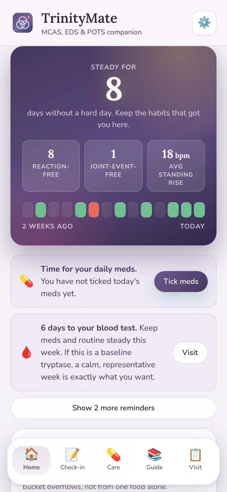
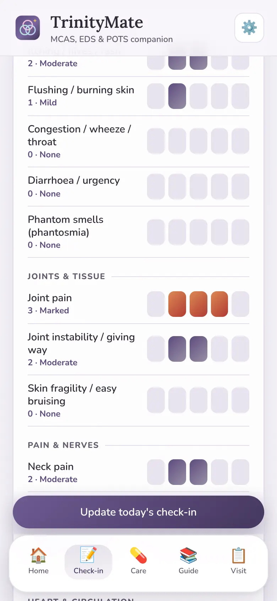
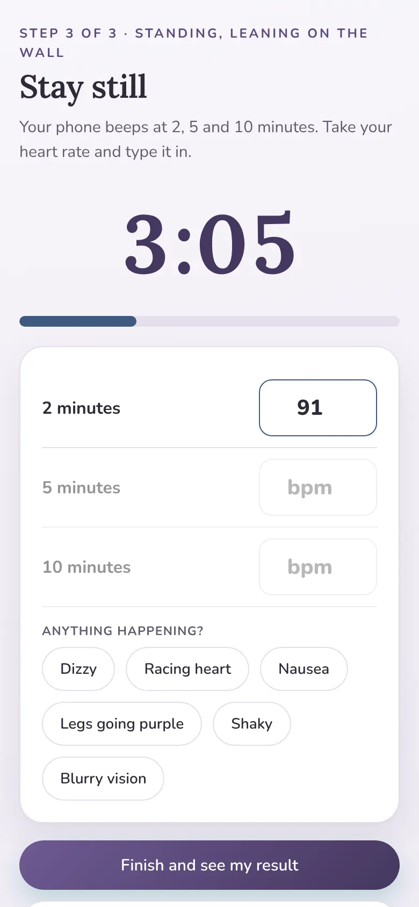
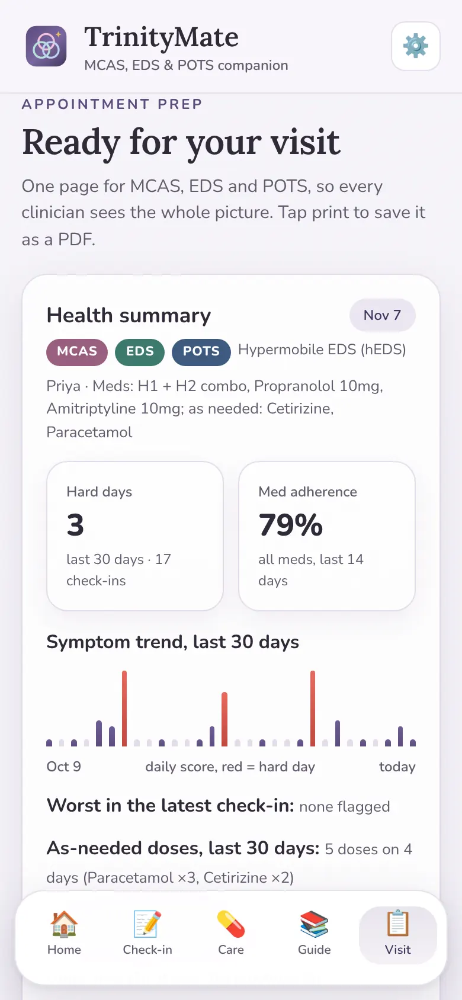
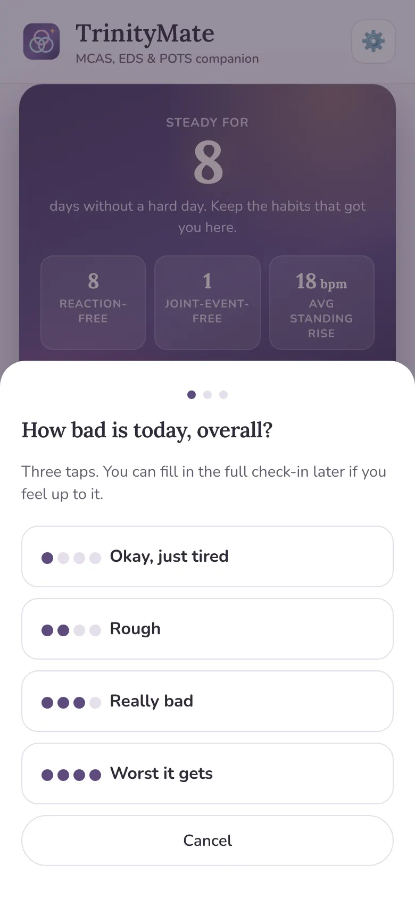

For people living with the trifecta
One tracker for MCAS, EDS and POTS
These three often turn up together, share triggers and set each other off. TrinityMate tracks them side by side and shows you how they overlap.
- MCAS
- hEDS and HSD
- POTS
- Private and offline
- No account
- No subscription
- iPhone and Android


Why track all three together?
Most symptom trackers cover one condition. But if you live with mast cell activation syndrome (MCAS), Ehlers-Danlos syndrome or hypermobility spectrum disorder (EDS or HSD) and postural tachycardia syndrome (POTS), you'll know they rarely behave like three separate problems. A hot day can mean flushing, dizziness and aching joints all at once. A busy day can bring a mast cell reaction that evening and joint payback the next morning.
Logging them in three places hides those links. TrinityMate keeps everything in one short daily check-in, so the patterns between them can show up. Read more about how MCAS, EDS and POTS connect.
What TrinityMate does
Everything you need to log, spot patterns and walk into appointments prepared.
One check-in for all three
Pick your conditions once, and the daily check-in only asks about yours. Symptoms are grouped by body system and rated 0 to 4, with heart rate lying and standing, foods and everyday triggers in the same place. You can hide any symptoms you don't get.

See where your conditions overlap
TrinityMate shows which days more than one condition flared at once, and which triggers they share. It's the picture you can't get from three separate trackers.
A trigger finder that allows for delays
Reactions don't always happen straight away. The trigger finder looks up to 48 hours ahead for mast cell reactions, at the next day for joint payback, and at the same day for POTS.

A guided lean test for POTS
A 10-minute home stand test with a timer that beeps when each heart rate reading is due, and keeps your screen on while you're standing. Your results build up into a chart over time.

Log joint slips on a body map
Tap where a subluxation or dislocation happened, and TrinityMate builds a heat map of the joints that slip most. There's a Beighton score self-check and space for PT, stretches and brace days.

One summary for your appointments
A single page with a section for each condition, recent flare episodes and questions to ask, built from your own log. Print it or save it as a PDF, so every specialist sees the whole picture.

A three-tap version for rough days
On foggy, low energy days, three taps is enough to keep your log going. You can fill in the rest later if you feel up to it.

Tools for each condition
MCAS
- 48-hour food correlator and a live histamine bucket
- Food list you can mark safe or trigger
- 3-day reintroduction guide
- Tryptase and other blood results on simple charts
EDS and HSD
- Body map for subluxations and dislocations
- Heat map of the joints that slip most
- Beighton score self-check
- PT, stretches and brace days
POTS
- Guided 10-minute lean test
- Heart rate lying and standing
- Fluids, salt and compression
- Standing heart rate over time
Meds and care
Daily meds with a streak, plus as-needed doses logged with the time. A flare plan and an emergency card that covers all three.
Pacing
An optional spoons budget that shows whether overdoing it leads to a hard next day.
Light and dark
Follows your phone's setting, or pick one. Easy on the eyes on bad days.
How it works
Buy it on Etsy
One payment, no subscription. You get a PDF with your link, a QR code and simple setup steps.
Open the link on your phone
Tap Add to Home Screen and TrinityMate opens like any other app, even offline.
Pick your conditions
Choose MCAS, EDS, POTS or any mix, and start your first check-in.
Your data stays on your phone
TrinityMate has no account, no cloud and no tracking. What you log is stored only on your device and never sent to us or anyone else. You can save a backup file or export your data whenever you want, and you decide where it goes.
Questions
Is TrinityMate a real app or a printable?
It's a real app. You open a link on your phone, add it to your home screen, and from then on it opens like any other app. It works offline once it's on your phone.
Does it work on iPhone and Android?
Yes. It works in Safari on iPhone and in Chrome, Edge or Samsung Internet on Android. It also works on a tablet or computer.
Where is my data stored?
Only on your own phone. There's no account, no cloud and no tracking, so nobody else can see what you log. You can save a backup file whenever you like, and it's worth doing now and then.
Do I need all three conditions to use it?
No. At setup you pick MCAS, EDS, POTS or any mix, and the app only shows what fits. Plenty of people use it for just one or two.
I already use MastMate, EDSMate or PotsMate. Can I bring my history?
Yes. Save a backup file from your current app and open it in TrinityMate. Your history comes across and your old app is left as it is.
Is there a subscription?
No. You buy it once on Etsy and updates are included.
Is TrinityMate medical advice?
No. It's a tool for tracking and organising, so you and your doctors can see patterns more clearly. It can't diagnose anything or replace medical care.
Is there a Google Play version?
We're working on one. For now, the Etsy version works on Android phones straight from the browser.
Make sense of all three, in one place
One short daily check-in, patterns you can actually see, and a summary your doctors will thank you for.
Get TrinityMate on Etsy